De verandering waargenomen
A.E. Cohen als historicus en universitair bestuurder
Tentoonstelling in de Universiteitsbibliotheek te Leiden, van 28 november 2003 tot en met 4 januari 2004.
Tentoongestelde stukken
10. Rector magnificus II: herdenken en representeren
Heeft Huizinga zich eens beklaagd over `het gebrek aan publieke wellevendheid’ in de Nederlandse samenleving, dan heeft hij daarmee zeker niet Cohen bedoeld. Optreden als rector deed hij met stijl en waardigheid, zich zeer bewust van de Leidse mores, en graag de Leidse universiteit vertegenwoordigend bij belangrijke gebeurtenissen in binnen- en buitenland. Bovendien sprak hij namens de Nederlandse zusteruniversiteiten bij de inauguraties van de universiteiten te Rotterdam en Maastricht en bij de lustrumviering van de Katholieke Universiteit Nijmegen. Twee herdenkingen waren wel heel speciaal: de honderdste geboortedag van Huizinga en het vierde eeuwfeest van de Leidse universiteit. Het eeuwjaar van Huizinga’s geboorte was vooral te Groningen herdacht met een indrukwekkend congres, waarbij Cohen sprak over Huizinga als Leids hoogleraar. Cohen behoorde tot de eersten die gebruik maakten van de nalatenschap van Huizinga in de Leidse UB en bovendien verdiepte hij zich in de universiteitsarchieven om Huizinga’s bemoeienis na te gaan met de organisatie van de Leidse universiteit en in het bijzonder van de geschiedenisstudie. Als complement van de Groningse plechtigheden, vond in Leiden op 7 december 1972 een herdenking van Huizinga’s geboorte plaats, met de bekleding van het eredoctoraat aan Werner Kaegi. Aan de viering van het vierde eeuwfeest van de Leidse universiteit werd ruime aandacht besteed met tal van activiteiten. Bij de officiële viering waren uiteraard de leden van het Koninklijk Huis aanwezig.
| 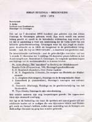 | 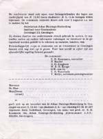 | 10.1. Johan Huizinga-herdenking 1872-1972, Groningen, 11-15 december 1972. Programma. [UBL, Huizinga-collectie, nr. 136 IV.3] |
| 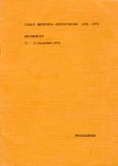 | 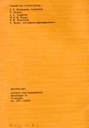 | |
| 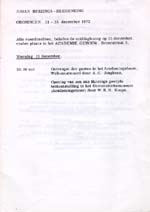 | 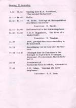 | |
| 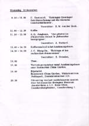 | 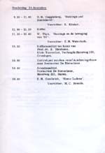 | |
| 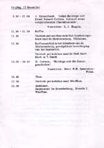 | 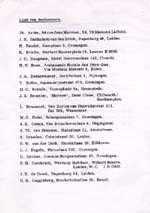 | |
| 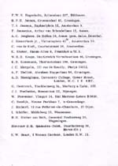 | 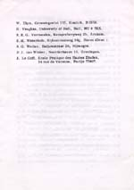 | |
| 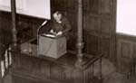 | 10.2. AEC tijdens het uitspreken van zijn rede te Groningen. [AEC] | |
| 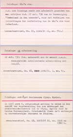 | 10.3. Notitiekaartjes van het onderzoek van Cohen naar Huizinga’s activiteiten als Leids hoogleraar. [Amsterdam, Anton van der Lem] | |
| 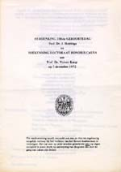 | 10.4. Herdenking 100ste geboortedag Prof. Dr. J. Huizinga en toekenning doctoraat honoris causa aan Prof. Dr. Werner Kaegi op 7 december 1972. [AHM] | |
| 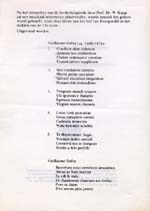 | 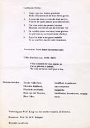 | |
| 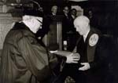 | 10.5. B.W. Schaper
overhandigt Werner Kaegi de bul van het Leidse eredoctoraat [Leiden,
AHM]
¶ In reactie op de herdenking te Groningen namen B.W. Schaper en
A.E. Cohen het initiatief tot een eredoctoraat voor Kaegi wegens
zijn verdiensten voor het verbreiden van het werk van Huizinga. |
|
| 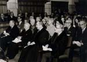 | 10.6. Op de eerste rij van
links naar rechts: A.E. Cohen (rector magnificus), Werner Kaegi, J.
Heesterman (decaan van de faculteit), B.W. Schaper (promotor). Op de
tweede rij rechts Huizinga’s kinderen en weduwe: van rechts naar
links: Jim, Leonhard en Elisabeth Huizinga en Auguste Huizinga-Schölvinck.
Achter haar Laura Huizinga, dochter uit Huizinga’s tweede
huwelijk. [AHM] |
|
| 10.7. Cohen spreekt als
rector magnificus de genodigden toe bij het vierde eeuwfeest van de
Universiteit [AEC]. |
||
| 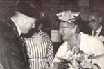 | 10.8. Cohen en leden van het Koninklijk Huis bij het vierde eeuwfeest van de Universiteit. [AEC] | |
| 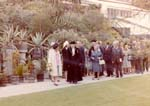 | 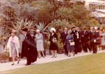 | 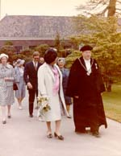 |
| 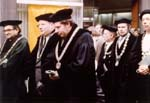 | 10.9. Cohen in de erestoet bij het 550-jarig bestaan van de Katholieke Universiteit te Leuven [AEC] | |
| vorige pagina | volgende pagina |